UI Framework
The Falcon UI Automation Framework is a tool for testing web applications.
This framework can be used for automating most routine processes in web application, such as:
• Cross browser Testing, Execute on Local machine, remote machine(grid), Cloud (BrowserStack).• Verification of different data types(Primitive and Non-Primitive).
• Utilities to read and write with different file formats(.xls, .xlsx, .txt, .csv, .xml).
Falcon-UI Automation framework uses the following tool and frameworks:
• Java - Programming language
• TestNG - Unit Framework
• Maven - Build Management Tool
• Selenium - Automation Tool
Environment Requirements
a)Configure Java and Maven
Follow the steps mentioned in the below link:
install-maven-in-windowsb)Eclipse IDE
Follow the steps mentioned in the below link:
>>eclipse-ide-download-and-installc)TestNG
Follow the steps mentioned in the below link:
>selenium-webdriver/install-testngSetup UI Project
Following are the steps to start Falcon-UI project for first time:
• Open Eclipse.
• Click on File menu and select New from given list then click on Maven Project.

• Click Next under Maven Project.

• Click Configure.
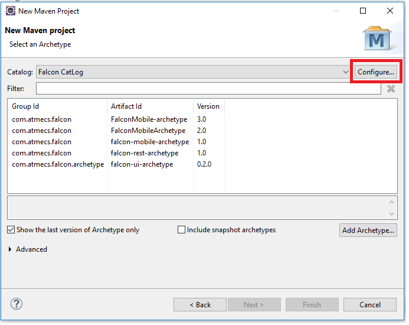
• Click on Add Remote Catalog.
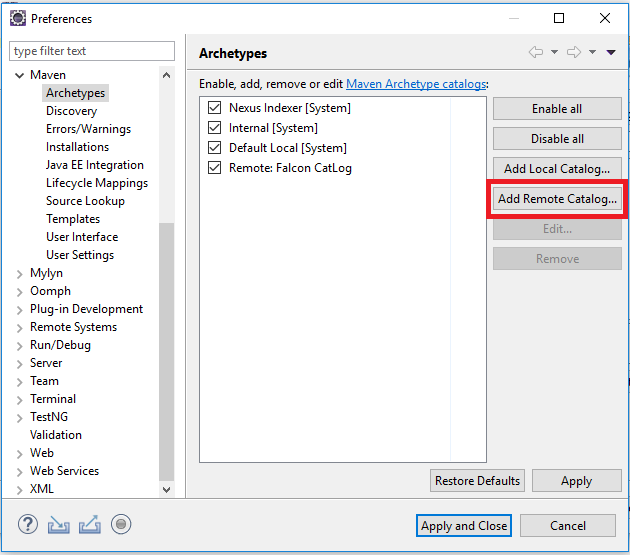
• Enter below details under Remote Archetype Catalog window and click Ok.
A)Catalog File :
http://10.10.10.150:8081/nexus/service/local/repositories/falcon/content/archetype-catalog.xml B)Description :
It can be any name to identify the Catalog say Falcon-Catalog.
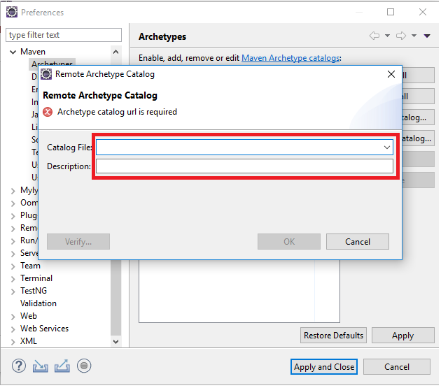
• After Adding Remote Catalog It will show as Remote: NameWhichYouGave on Archetypes Window
• Then click Apply and Close to save changes(after saving changes it will show all archetypes of falcon).
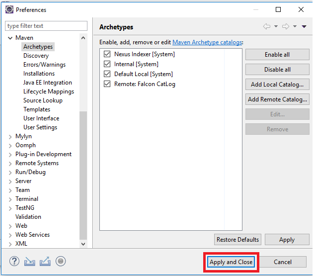
• UnCheck the option called “Show the last version of Archetype only ”(it will show you all old and new archetypes of falcon).
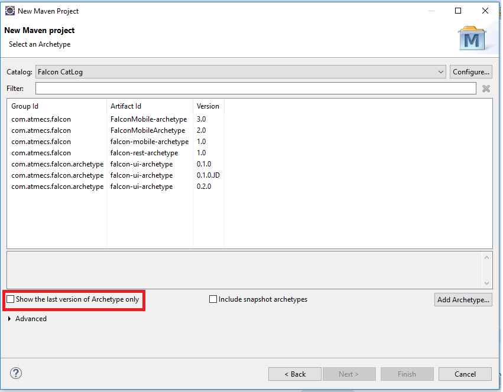
• Select Falcon-UI Archetype (with any version whatever we want eg . 0.1.0, 0.2.0 etc )as Archetype ID and then Click Next.
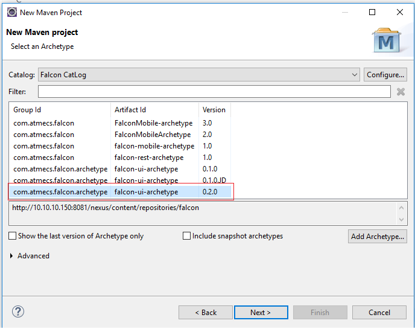
• Enter Group Id and Artifact Id, package and Click Finish.
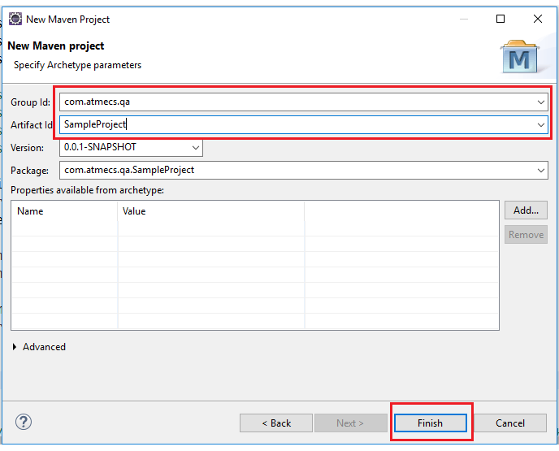
• Once project gets created You will found project structure as following
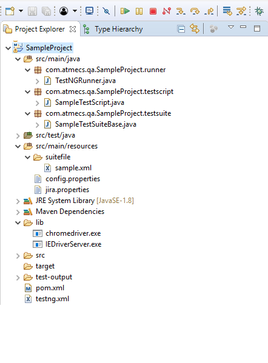
Understanding Project Structure:
In this, we will try to explore the project folder structure.
1.src/main/java - Application/Library sources
2.src/main/resources - Application/Library resources
3.lib - Browser Executables
4.pom.xml
5.testng.xml
1.src/main/java - Application/Library sources:
• This source folder contains packages like runner, testsuite and testscript.
• The main package name follows as ${Group Id}.${Artifact Id}.
• Earlier, we have created Artifact Id as 'falconUI' and Group Id as
'com.qa.automation'.
• So Now, the package name will be com.qa.automation.falconUI.
• For any application, if you want to add source code folder like utils, helper etc., you can
very
well
create
'utils/helper' folder under 'src/main/java/${packageName}' and keep all your domain
utils/helper
under
it.
1.1.${packageName}/runner/
This folder contains ‘TestNGRunner.java’ file which has the purpose to set up listeners,
suites to run
to testng.xml and upload TestNG results (if configured, we will discuss this more
detailed
in Understanding config.properties).
NOTE: Just keep this file as it is unless you don’t have any specific
requirements.
1.2.${packageName}/testscript/
This folder contains your actual test scripts to your application.
1.3.${packageName}/testsuite/
This folder contains Base Test Suite file for your test scripts.
2.src/man/resources – Application/Library resources
This resources folder contains domain specific resources and test data files.
2.1.suitefile/
This folder contains your application specific test suite files
where
you will mention test classes or packages.
• Multiple suite files can be added to src/main/resources/suitefile/ directory.
• Path of the suite files should be added in testng.xml.
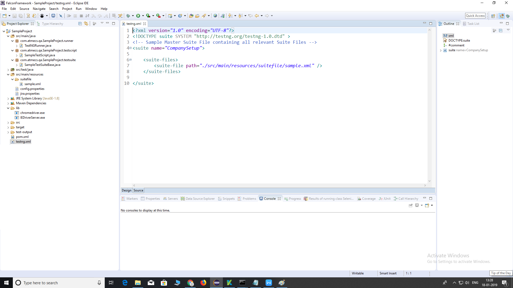
2.2.config.properties
This is the main entry for this project and its purpose is to set up the test environment, browser
details and other configurations like bug creation, capturing screenshot and uploading testNG
results.
We will discuss this file detailed in Understanding
config.properties
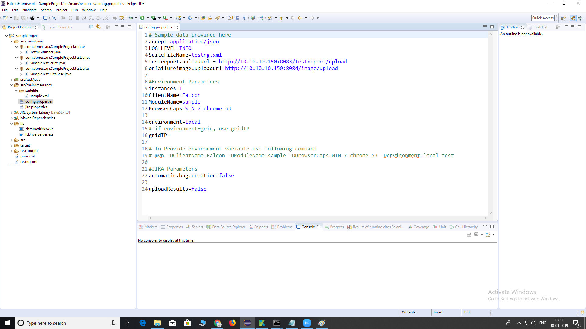
2.3.jira.properties
This is the file where we mention jira credentials for creation of a bug if there is any error or
failure.
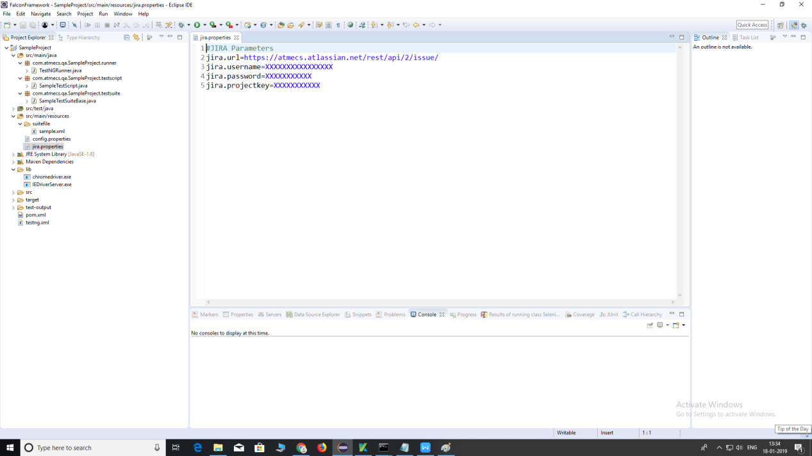
3.lib/
This is the folder which contains all the driver executable like
chromedriver.exe,IEDriverServer.exe
etc. This two drivers is provided by default. You can replace it with updated drivers and you can
add
gecko driver and MicrosoftEdge driver to lib folder.
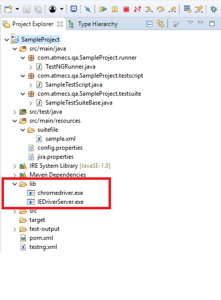
4.pom.xml
This is the main file where the Maven project info is stored and configured to run the test scripts,
manage all the falcon and other dependencies.
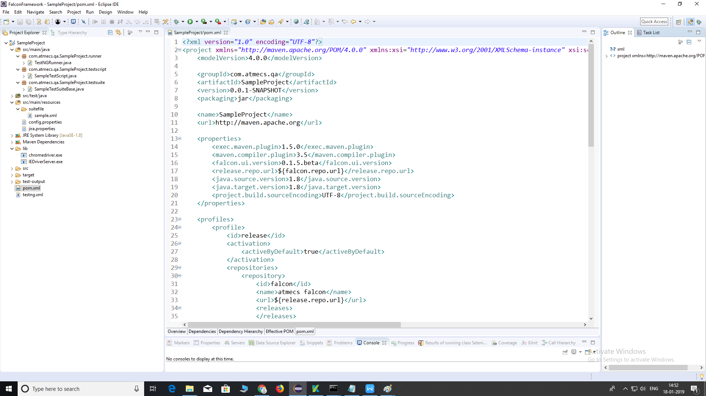
Note : If you select archetype of version 0.2.0 then you need to do changes in pom.xml
file.You
need to change following tabs with given values.
1.
2.
Updated pom.xml will look like following:
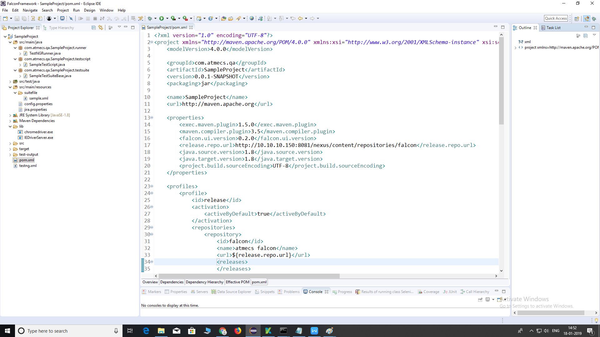
5.testng.xml
This is the master *.xml file where you will mention all the suite files as below:

Understanding config. properties:
This is the main file which set up the complete test project. Here we will discuss all the main
configurations one by one.
1.SuiteFileName – This is the property where we store the master *.xml file.
In our case, it is testng.xml
2.Testreport.uploadurl– This is the property where we store the report dashboard report
upload
URL. In
our case, it is http://10.10.10.150:8083/testreport/upload
3.Onfailureimage.uploadurl - This is the property where we store the report dashboard image
upload URL.
In our case, it is
http://10.10.10.150:8084/image/upload
4.Instances – This is the property where we store the number of parallel instances to run. It
will
create numbers of threads to execute script parallel.
5.ClientName – This is the property where we store the Client Name to identify the Report
Dashboard.
6.ModuleName – This is the property where we store the list of suite files, comma separated,
to
execute.
Module name is the name of the suite file which are present in src/main/resources/suitefile/ without
extension. To add multiple modules(suites) provide multiple ModuleName values separated by comma
(,)
For Example:
ModuleName=sample1,sample2,sampe3
7.BrowserCaps – This is the property where we store the test browser details according to
instances.
Note: To add multiple browsers provide multiple BrowserCaps value separated by comma
(,).
Supported OS: Win, Mac, Linux
Supported Browsers: firefox (version<=46), chrome, ie, safari
For
Example:
WIN_7_chrome_66 (if instances
as 1)
WIN_7_chrome_66, WIN_7_firefox_61 (if instances
as2)
8.Environment – This is the property
where we store test environment details like
a.local (for local machine run),
b.grid
(for
Selenium
Grid Machine run)
c.browserstack (for Browser Stack run)
9.GridIP – This is
the
property where we
store grid machine details. This property will be picked only when the environment is
grid.
10.
automatic.bug.creation – This is the property where we store a Boolean value to create a
bug
in
JIRA. If True, it will create a JIRA bug according to given properties in jira.properties If
False,
it won’t create any bug in JIRA even if there is an error or failure.
11.
capture.screenshot– This
is the property where we store a Boolean value to capture a screenshot on test failure. If True,
it
will capture a screenshot on test failure If False, it won’t capture any screenshot even if
there is
an error or failure.
12. UploadResults– This is the property where we store a
Boolean value to
upload the results on completion of execution. If True, it will upload the testNG results along
with
screenshot images (if capture.screenshot is true) and error messages if any. If False, it won’t
upload the testNG results upon completion of test execution.
Creating and Running Test Scripts:
In this we will look how to create Test Scripts and execute them as per test requirement.
1.Creation of Test Scripts:
Create Your Test Scripts under testscript folder as shown in below.
Create a simple class in testscript folder.
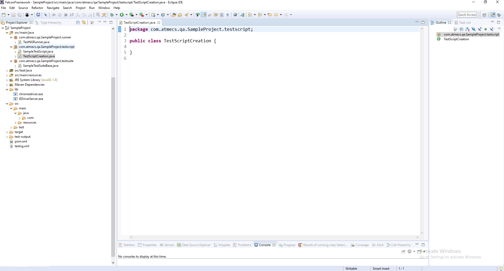
2.Adding Test Scripts to Suite File:
Create a Suite File under src/main/resources/suitefile and Add the Created Test Script to it
as
below:
In sample.xml we need to add class which we want to execute.
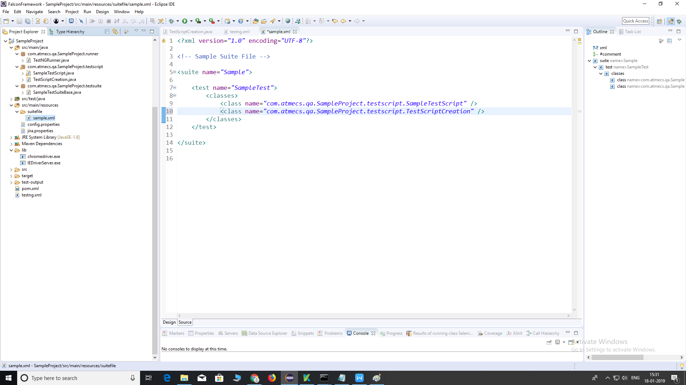
3.Adding Suite Files to testng.xml:
Add created suite files to testng.xml as below:
We can add more than one sample.xml files and this suites adds to testNG.xml file
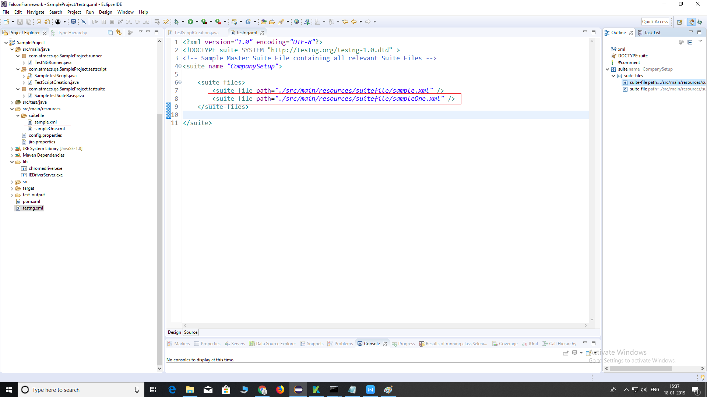
4.Setting up Test Environment in config.properties:
Configure Test Environment under config.properties as below:
Important Configurations:
a.testreport.uploadurl– Report Dashboard Upload URL (if uploadResults=true)
b.onfailureimage.uploadurl– Report Dashboard Image Upload URL (if uploadResults=true &
capture.screenshot=true)
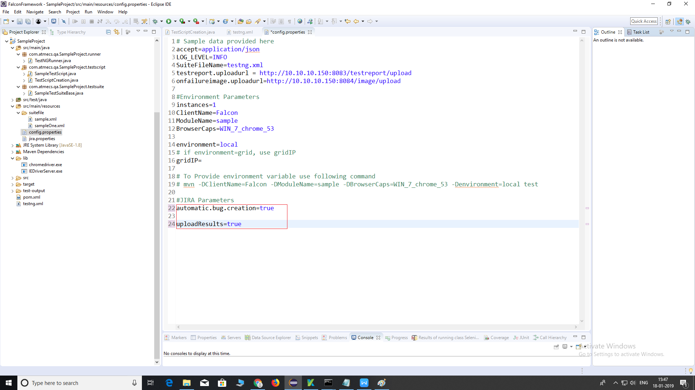
c.instances– Number of Parallel Test Runs (1 for Single Run, 2 for Parallel Run)
d.ClientName– Client Name to identify Reports under Report Dashboard
e.ModuleName– This is the suite files separated by comma (,) without any extension. For
Example:
demoSuite
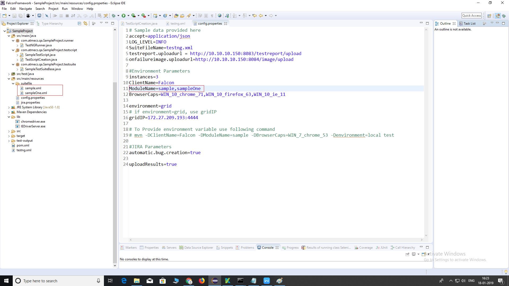
f.BrowserCaps– Browser and OS Details, Syntax will be
OSName_OSVersion_BrowserName_BrowserVersion
We can ‘ve multiple BrowserCaps for Parallel run when instances are more than 1.
For Example:
BrowserCaps=WIN_10_chrome_66 (when instances as 1).
BrowserCaps=WIN_10_chrome_66,WIN_10_ie_11 (when instances as 2).
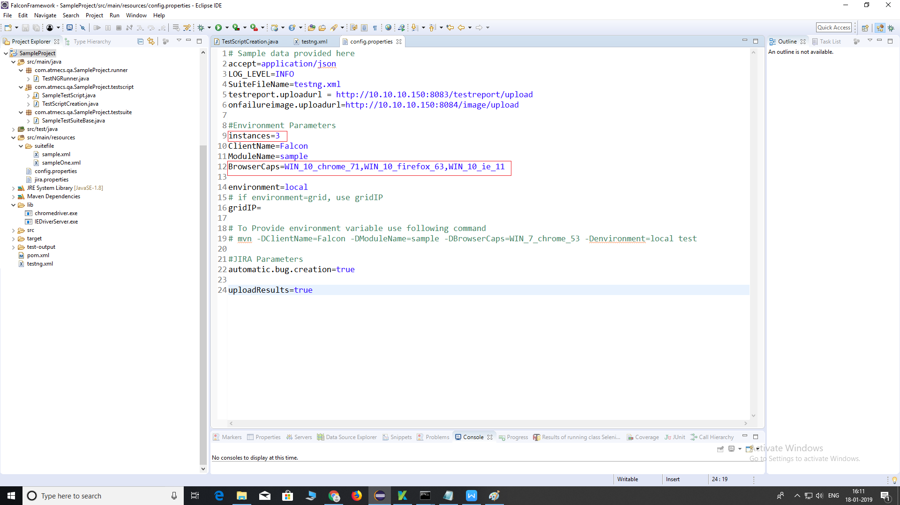
g.Environment/gridIp – This will work as below:
Local – To Run in the Local Machine.
Grid – To Run in the Grid Machine (gridIP should be mentioned).
Browserstack – To Run in the Cloud Machine (Browser Stack).
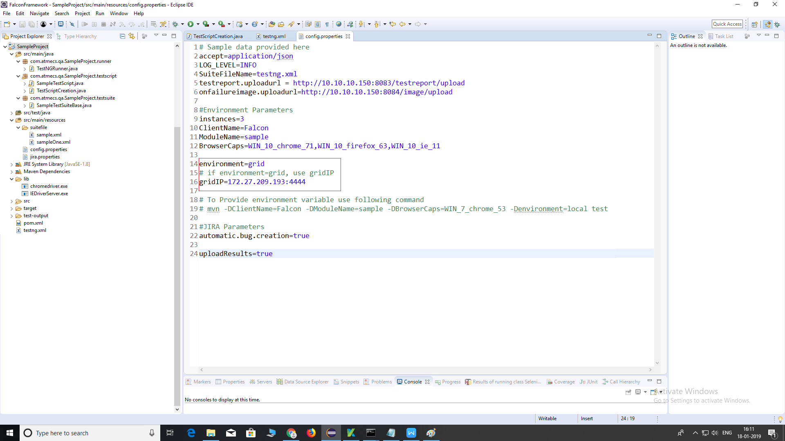
h.automatic.bug.creation – To Create JIRA Issues if there is an error.
i.capture.screenshot – To Capture Screenshot if there is an error.
j.uploadResults – To Upload Results to Report Dashboard.

5.Running Test Scripts:
To Run the Project, Right Click on the Project and Click on Run as and then Maven
Test as shown in
below:
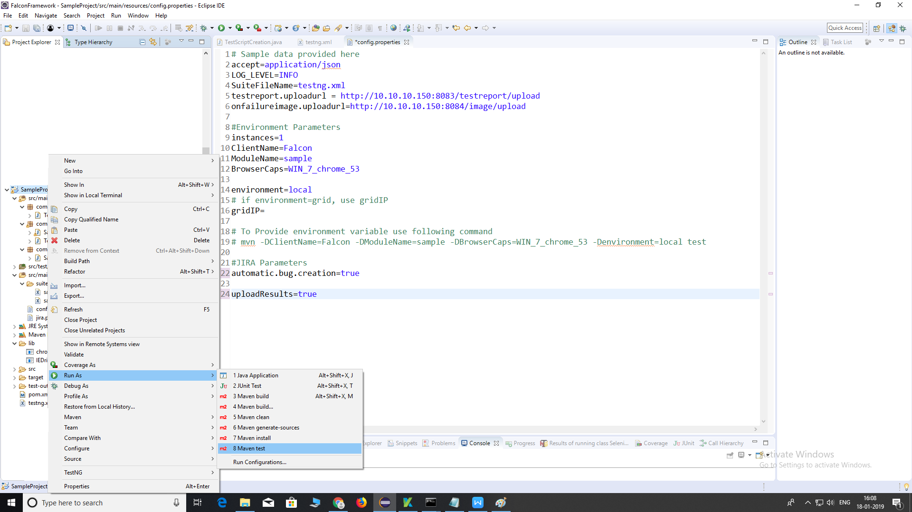